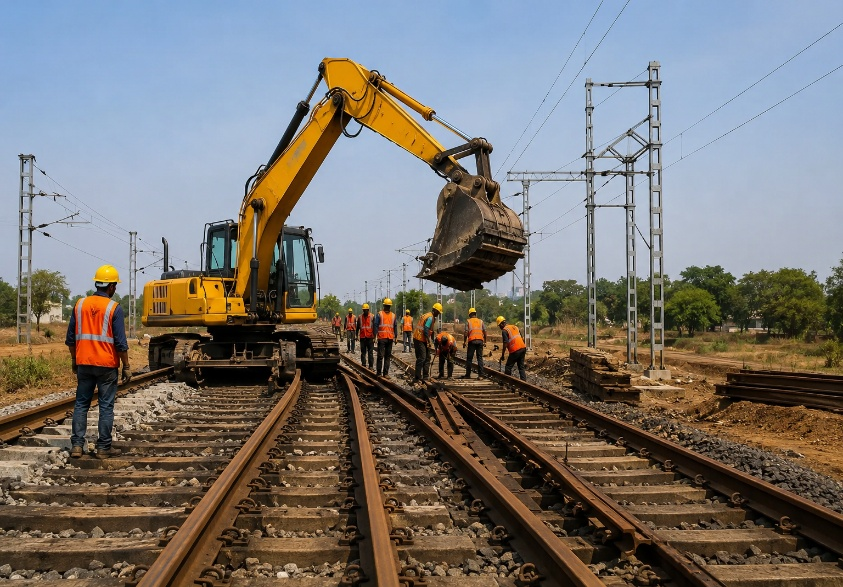

Building strong infrastructure — the journey of M/s Karan Enterprises
In today's fast-moving infrastructure and construction landscape, quality, reliability and innovation are the pillars that define long-term success. At M/s Karan Enterprises, these values are not just words — they are the foundation of every project we undertake.
Who we are
M/s Karan Enterprises is a trusted name in the field of railway infrastructure development, civil construction, track-related works, slope protection work, and infrastructure solutions. With a commitment to excellence and a vision to contribute towards nation-building, we continuously strive to deliver projects that meet the highest standards of safety, durability and efficiency.
Our expertise lies in understanding project requirements with precision and executing them with professionalism, technical knowledge and a dedicated workforce.
Our core expertise
Railway infrastructure & track works — our core strength
Railway infrastructure is one of the most critical components of national development and connectivity. At M/s Karan Enterprises, railway-related projects remain our strongest area of expertise, supported by years of practical execution experience, technical understanding and operational efficiency.
We specialize in supporting railway construction and development activities through quality execution, proper planning and timely project delivery. Along with railway works, we also undertake broader infrastructure, civil construction and slope protection projects across different sectors.
Our team understands the importance of safety, technical accuracy, durability and operational reliability in every project we execute. From groundwork preparation to execution support, every stage of our work is handled with strict quality control and professional supervision.
Slope protection & rehabilitation work for railway projects
Slope stabilization and protection play a critical role in ensuring safety and structural integrity in challenging terrains. Our team brings specialized expertise in slope protection solutions designed to minimize erosion risks, improve long-term stability and support safe railway operations in difficult terrains.
We focus on practical, effective and sustainable engineering methods that align with project requirements and environmental conditions.
Civil construction services
M/s Karan Enterprises provides comprehensive civil construction services across multiple sectors. Our team works closely with clients to ensure timely project delivery while maintaining superior workmanship and safety standards.
With strong project management capabilities and experienced professionals, we aim to deliver solutions that create lasting value.
Commitment to quality & safety
At M/s Karan Enterprises, quality and safety are at the center of every operation. We believe that successful project execution depends not only on technical expertise but also on maintaining strict safety protocols and operational discipline.
Our approach includes:
- High-quality construction standards
- Timely project execution
- Skilled workforce and technical supervision
- Efficient project coordination
- Strong focus on workplace safety
- Client-centric project management
Supporting the growth of modern infrastructure
The construction and infrastructure industry is evolving rapidly, and M/s Karan Enterprises is committed to growing alongside it. We continuously explore modern techniques, better project execution methods and innovative engineering practices to improve efficiency and deliver enhanced results.
Our goal is to become a reliable long-term partner for organizations seeking dependable railway infrastructure, civil construction and infrastructure development solutions.
Building long-term partnerships
We believe strong business relationships are built on trust, transparency and performance. Whether working with private clients, contractors or large infrastructure organizations, M/s Karan Enterprises focuses on building partnerships that create mutual growth and long-term success.
As we move forward, we remain committed to expanding our capabilities, taking on new challenges and contributing meaningfully to the development of infrastructure across the country.
Conclusion
M/s Karan Enterprises stands for dedication, quality and engineering excellence. Every project we undertake reflects our commitment to delivering reliable infrastructure solutions that make a lasting impact.
With a growing portfolio, experienced team and strong vision for the future, we continue to contribute towards railway development, civil construction and modern infrastructure growth — while building trust, reliability and long-term progress.